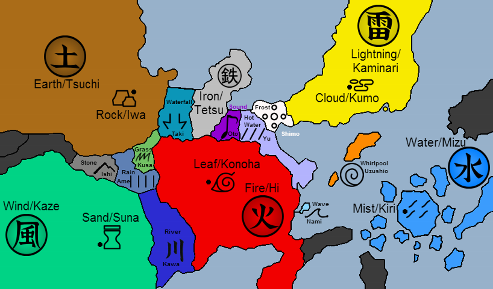

Naruto’s journey begins when he graduates from the Ninja Academy and is placed on Team 7 alongside two very different teammates: Sasuke Uchiha, a gifted yet crazy ninja with a dark past, and Sakura Haruno, a bright and determined kunoichi whom Naruto has a crush on. Their instructor, Kakashi Hatake, is a laid-back but highly skilled jonin who teaches them the true meaning of teamwork. As Naruto and his friends undertake missions and face life-threatening challenges, they encounter powerful enemies, grow their abilities, and forge strong bonds with other young ninjas.
The series builds toward the Chūnin Exams, a brutal test of skill that draws ninja from across the land. Here, Naruto meets key characters like Rock Lee, Gaara, and Neji Hyuga, and begins to prove himself not just as a class clown, but as a capable and determined fighter. As darker forces emerge—including the snake-like rogue ninja Orochimaru and the mysterious criminal group Akatsuki—Naruto and his peers are forced to confront the realities of war, betrayal, and personal loss.
A major turning point comes when Sasuke, consumed by a desire for revenge against his brother Itachi, abandons the village in search of power. Naruto, heartbroken by the loss of his friend, vows to bring him back no matter what. Though he tries to stop Sasuke, Naruto is ultimately unable to prevent him from leaving. Realizing he still has much to learn, Naruto leaves the village at the end of the series to train with the legendary ninja Jiraiya, setting the stage for the next chapter in his journey.
